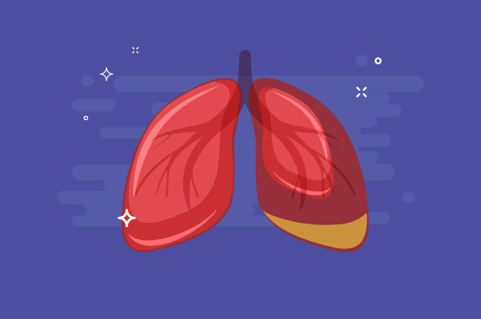

Asuhan Keperawatan Penyakit Efusi Pleura

Diterbitkan: 25 Desember 2023 || Kelas B
Pengkajian
- Identitas Pasien
Pada tahap ini meliputi nama, umur, jenis kelamin, alamat rumah, agama atau kepercayaan, suku bangsa,
bahasa yang dipakai, status pendidikan dan pekerjaan pasien.
- Keluhan utama
Biasanya pada pasien dengan efusi pleura didapatkan keluhan berupa : sesak nafas, rasa berat pada dada,
nyeri pleuritik akibat iritasi pleura yang bersifat tajam dan terlokasilir terutama pada saat batuk dan
bernafas serta batuk non produktif.
- Riwayat penyakit sekarang
Pasien dengan effusi pleura biasanya akan diawali dengan adanya tanda -tanda seperti batuk, sesak nafas,
nyeri pleuritik, rasa berat pada dada, berat badan menurun dan sebagainya.
- Riwayat penyakit dahulu
Perlu ditanyakan apakah pasienpernah menderita penyakit seperti TBC paru, pneumoni, gagal jantung, trauma,
asites dan sebagainya.Hal ini diperlukan untuk mengetahui kemungkinan adanya faktor predisposisi.
- Riwayat penyakit keluarga
Perlu ditanyakan apakah ada anggota keluarga yang menderita penyakit-penyakit yang disinyalir sebagai
penyebab effusi pleura seperti Ca paru, asma, TB paru dan lain sebagainya.
- Riwayat Psikososial
Meliputi perasaan pasien terhadap penyakitnya, bagaimana cara mengatasinya serta bagaimana perilaku pasien
terhadap tindakan yang dilakukan terhadap dirinya.
Diagnosa keperawatan
Diagnosa keperawatan merupakan suatu penelitian klinis mengenai respon klien terhadap masalah kesehatan
atau proses kehidupan yang dialaminya baik yang berlangsung aktual maupun potensial. Diagnosa keperawatan
bertujuan untuk mengidentifiksi respon klien individu, keluarga dan komunitas terhadap situasi yang
berkaitan dengan kesehatan (SDKI,2017).
Adapun dignosa yang diangkat dari masalah sebelum dilakukan tindakan infasif adalah:
- Bersihan Jalan Napas Tidak Efektif
- Gangguan Pola Tidur
- Defisit Nutrisi
- Nyeri Akut
- Intoleransi Aktivitas
Intervensi keperawatan
Intervensi keperawatan adalah segala tretment yang dikerjakan oleh perawat yang didasarkan pada pengetahuan
dan penilaian klinis untuk mencapai luaran yang diharapkan. Tindakan keperawatan adalah perilaku atau
aktivitas spesifik yang dikerjakan oleh perawat untuk mengimplementasikan intervensi keperawatan
(SIKI,2018).
- Bersihan jalan nafas tidak efektif
- Tujuan : Setelah dilakukan tindakan keperawatan bersihan jalan nafas meningkat
- Kriteria hasil :
- PCO2 membaik
- PO2 membaik
- Takikardia membaik
- PH aretri membaik
- Sianosis membaik
- Pola napas membaik
- Warna kulit membaik
- Intervensi
Observasi:
- Identifikasi kemampuan batuk
- Monitor adanya retensi sputum
- Monitor tanda dan gejala infeksi saluran napas
- Monitor input dan output cairan (mis. jumlah dan karakteristik)
Terapeutik:
- Atur posisi semi-Fower atau Fowler
- Pasang perlak dan bengkok di pangkuan pasien
Edukasi:
- Jelaskan tujuan dan prosedur batuk efektif
- Anjurkan tarik napas dalam melalui hidung selama 4 detik, ditahan selama 2 detik, kemudian keluarkan
dari mulut dengan bibir mencucu (dibulatkan) selama 8 detik
- Anjurkan mengulangi tarik napas dalam hingga 3 kali
- Anjurkan batuk dengan kuat langsung setelah tarik napas dalam yang ke 3
- Nyeri akut berhubungan dengan agen pencedera fisiologis (inflamasi, iskemia, neoplasma) (D.0077)
- Tujuan: Setelah dilakuakan tindakan keperawatan diharapkan nyeri menurun
- Kriteria hasil :
- Keluahan nyeri menurun
- Melaporkan nyeri terkontrol meningkat
- Meringis menurun
- Penggunaan analgetik menurun
- Terkanan darah menurun
- Intervensi
Observasi:
- Identifikasi skala nyeri
- Identifikasi lokasi, karakteristik, durasi, frekuensi,kualitas, insentitas nyeri
Terapeutik
- Berikan teknik nonfarmakologis untuk mengurangi rasa nyeri
- Pertimbangkan jenis dan sumber nyeri dalam pemilihan strategi meredakan nyeri
Edukasi
- Anjurkan teknik nonfarmakologi untuk mengurangi rasa nyeri
Kolaborasi
- Kolaborasi pemberian analgetik,(jika perlu)
- Gangguan pola tidur
- Tujuan : setelah dilakukan tindakan keperawatan pola tidur yang baik
- Kriteria hasil:
- Memahami faktor penyebab gangguan tidur
- Mampu menentukan penyebab tidur inadekuat
- Mampu memahami rencana khusus untuk menangani atau mengoreksi penyebab tidur tidak adekuat
- Mampu menciptakan pola tidur yang adekuat dengan penurunan terhadap pikiram yang melayang-layang
- Intervensi
Observasi
- Melakukan observasi terkait dengan pola tidur
- Mengkaji pengganggu obat tidur, pola makan, pola eliminasi BAB/BAK.
Terapeutik
- Relasasi otot progresif
- Yoga, terapi benson, meditasi, terapi nafas dalam dengan modifikasi imajinasi
- Terapi musik
- Aromaterapi
- Terapi jemur
- Modifikasi lingkungan terkait slip hygine
Edukasi
- Memberikan pemahaman kebiasaan tidur yang baik
- Pentingnya memberikan perubahan nutrisi yang baik
- Defisit nutrisi
- Tujuan : setelah dilakukan tindakan keperawatan status nutrisi membaik
- Kriteria hasil
- Porsi makanan yang dihabiskan meningkat
- Berat badan membaik
- Nafsu makan membaik
- Indeks masa tubuh membaik
- Frekuensi makan membaik
- Intervensi
Observasi
- Identifikasi alergi dan intoleransi makanan
- Monitor asupan makanan
- Identifikasi perubahan berat badan
- Monitor berat badan
- Timbang berat badan
Terapeutik
- Berikan makanan tinggi kalori dan protein
Kolaborasi
- Kolaborasi dengan ahli gizi tentang cara meningkatkan asupan makanan
- Intoleran aktivitas
- Tujuan : setelah dilakuakan tindakan keperawatan diharapkan aktifitas meningkat
- Kriteria hasil
- Kemudahan melakukan aktifitas
- Dyspnea saat beraktifitas menurun
- Dyspnea setelah beraktifitas menurun
- Perasaan lemah menurun
- Tekanan darah membaik
- Frekuensi nadi membaik
- Intervensi
Observasi
- Identifikasi gangguan fungsi tubuh yang mengakibatkan kelelahan
- Monitor lokasi dan ketidak nyamanan selama melakukan aktifitas
Terpeutik
- Sediakan lingkungan nyaman dan rendah stimukus (mis, cahaya, suara, kunjungan)
Edukasi
- Anjurkan tirah baring
- Melakuakn aktifitas secara bertahap
Implementasi dan Evaluasi
Fase terakhir proses keperawatan adalah evaluasi terhadap asuhan keperawatan yang diberikan. Hal yang
dievaluasi adalah keakuratan dan kualitas data, teratasi atau tidaknya maslah pasien, serta pencapaian
tujuan serta ketepatan ntervensi keperawatan.
Tujuan evaluasi adalah untuk memberikan umpan balik rencanaa keperawatan, menilai dan meningkatkan mutu
pelayanan keperawatan melalui perbandingan pelayanan keperawatan mutu pelayanan keperawatan yang diberikan
serta hasilnya dengan standar yang telah ditentukan terebih dahulu.